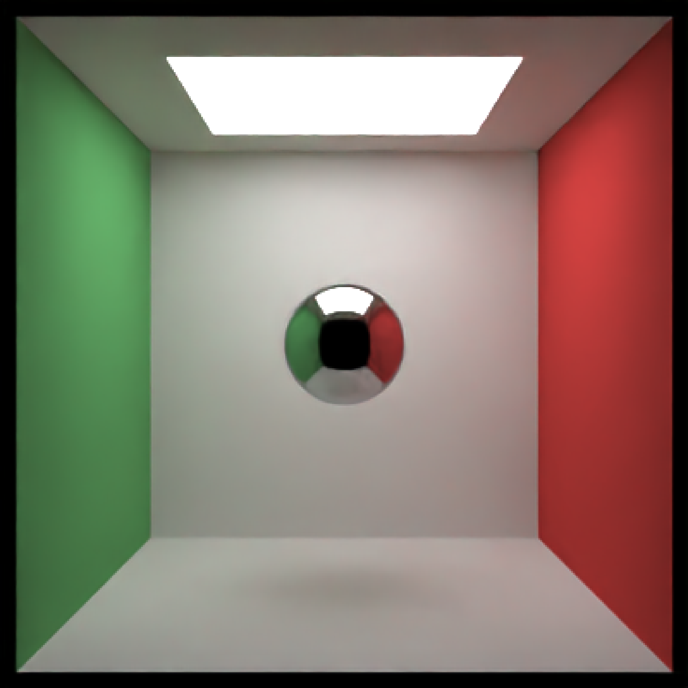
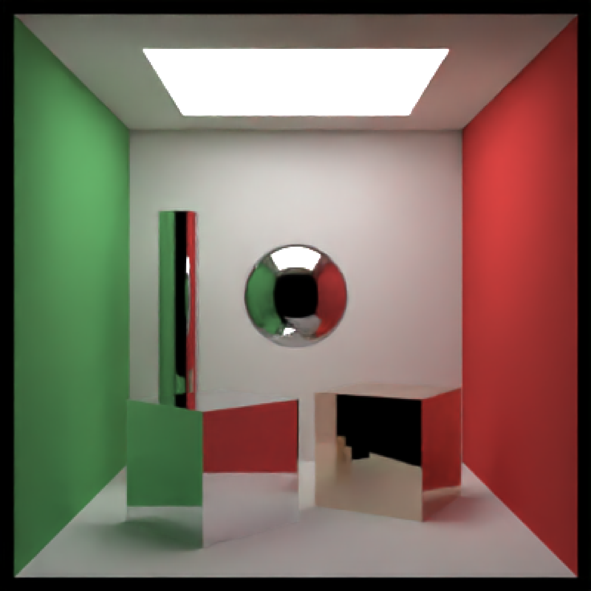
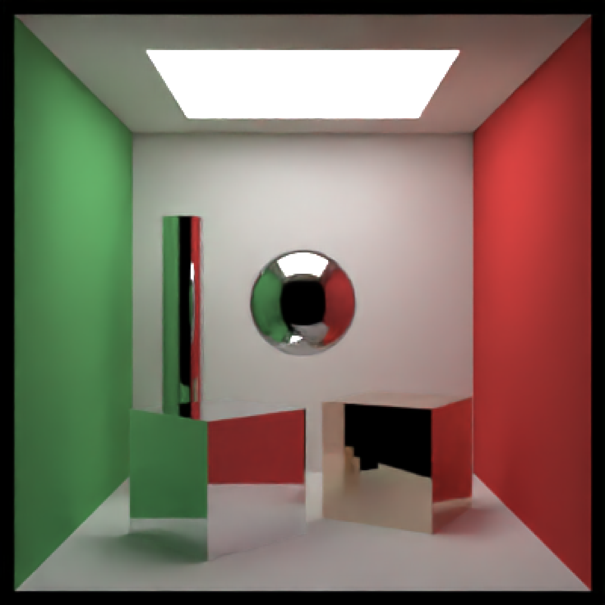

Metallic Material
metal(
color = "#ffffff",
eta = 0,
kappa = 0,
fuzz = 0,
checkercolor = NA,
checkerperiod = 3,
noise = 0,
noisephase = 0,
noiseintensity = 10,
noisecolor = "#000000",
gradient_color = NA,
gradient_transpose = FALSE,
gradient_point_start = NA,
gradient_point_end = NA,
gradient_type = "hsv",
image_texture = NA,
image_repeat = 1,
alpha_texture = NA,
bump_texture = NA,
bump_intensity = 1,
importance_sample = FALSE
)Arguments
- color
Default `white`. The color of the sphere. Can be either a hexadecimal code, R color string, or a numeric rgb vector listing three intensities between `0` and `1`.
- eta
Default `0`. Wavelength dependent refractivity of the material (red, green, and blue channels). If single number, will be repeated across all three channels.
- kappa
Default `0`. Wavelength dependent absorption of the material (red, green, and blue channels). If single number, will be repeated across all three channels.
- fuzz
Default `0`. Deprecated--Use the microfacet material instead, as it is designed for rough metals. The roughness of the metallic surface. Maximum `1`.
- checkercolor
Default `NA`. If not `NA`, determines the secondary color of the checkered surface. Can be either a hexadecimal code, or a numeric rgb vector listing three intensities between `0` and `1`.
- checkerperiod
Default `3`. The period of the checker pattern. Increasing this value makes the checker pattern bigger, and decreasing it makes it smaller
- noise
Default `0`. If not `0`, covers the surface in a turbulent marble pattern. This value will determine the amount of turbulence in the texture.
- noisephase
Default `0`. The phase of the noise. The noise will repeat at `360`.
- noiseintensity
Default `10`. Intensity of the noise.
- noisecolor
Default `#000000`. The secondary color of the noise pattern. Can be either a hexadecimal code, or a numeric rgb vector listing three intensities between `0` and `1`.
- gradient_color
Default `NA`. If not `NA`, creates a secondary color for a linear gradient between the this color and color specified in `color`. Direction is determined by `gradient_transpose`.
- gradient_transpose
Default `FALSE`. If `TRUE`, this will use the `v` coordinate texture instead of the `u` coordinate texture to map the gradient.
- gradient_point_start
Default `NA`. If not `NA`, this changes the behavior from mapping texture coordinates to mapping to world space coordinates. This should be a length-3 vector specifying the x,y, and z points where the gradient begins with value `color`.
- gradient_point_end
Default `NA`. If not `NA`, this changes the behavior from mapping texture coordinates to mapping to world space coordinates. This should be a length-3 vector specifying the x,y, and z points where the gradient begins with value `gradient_color`.
- gradient_type
Default `hsv`. Colorspace to calculate the gradient. Alternative `rgb`.
- image_texture
Default `NA`. A 3-layer RGB array or filename to be used as the texture on the surface of the object.
- image_repeat
Default `1`. Number of times to repeat the image across the surface. `u` and `v` repeat amount can be set independently if user passes in a length-2 vector.
- alpha_texture
Default `NA`. A matrix or filename (specifying a greyscale image) to be used to specify the transparency.
- bump_texture
Default `NA`. A matrix, array, or filename (specifying a greyscale image) to be used to specify a bump map for the surface.
- bump_intensity
Default `1`. Intensity of the bump map. High values may lead to unphysical results.
- importance_sample
Default `FALSE`. If `TRUE`, the object will be sampled explicitly during the rendering process. If the object is particularly important in contributing to the light paths in the image (e.g. light sources, refracting glass ball with caustics, metal objects concentrating light), this will help with the convergence of the image.
Value
Single row of a tibble describing the metallic material.
Examples
# Generate the cornell box with a single chrome sphere in the center. For other metals,
# See the website refractiveindex.info for eta and k data, use wavelengths 5
# 80nm (R), 530nm (G), and 430nm (B).
scene = generate_cornell() %>%
add_object(sphere(x=555/2,y=555/2,z=555/2,radius=555/8,
material=metal(eta=c(3.2176,3.1029,2.1839), k = c(3.3018,3.33,3.0339))))
if(rayrender:::run_documentation()) {
render_scene(scene, lookfrom=c(278,278,-800),lookat = c(278,278,0), samples=50,
aperture=0, fov=40, ambient_light=FALSE, parallel=TRUE)
}

#Add an aluminum rotated shiny metal block
scene = scene %>%
add_object(cube(x=380,y=150/2,z=200,xwidth=150,ywidth=150,zwidth=150,
material = metal(eta = c(1.07,0.8946,0.523), k = c(6.7144,6.188,4.95)),angle=c(0,45,0)))
if(rayrender:::run_documentation()) {
render_scene(scene, lookfrom=c(278,278,-800),lookat = c(278,278,0), samples=128,
aperture=0, fov=40, ambient_light=FALSE, parallel=TRUE)
}
#Add a copper metal cube
scene = scene %>%
add_object(cube(x=150,y=150/2,z=300,xwidth=150,ywidth=150,zwidth=150,
material = metal(eta = c(0.497,0.8231,1.338),
k = c(2.898,2.476,2.298)),
angle=c(0,-30,0)))
if(rayrender:::run_documentation()) {
render_scene(scene, lookfrom=c(278,278,-800),lookat = c(278,278,0), samples=128,
aperture=0, fov=40, ambient_light=FALSE, parallel=TRUE)
}
 #Finally, let's add a lead pipe
scene2 = scene %>%
add_object(cylinder(x=450,y=200,z=400,length=400,radius=30,
material = metal(eta = c(1.44,1.78,1.9),
k = c(3.18,3.36,3.43)),
angle=c(0,-30,0)))
if(rayrender:::run_documentation()) {
render_scene(scene2, lookfrom=c(278,278,-800),lookat = c(278,278,0), samples=128,
aperture=0, fov=40, ambient_light=FALSE, parallel=TRUE)
}

#Finally, let's add a lead pipe
scene2 = scene %>%
add_object(cylinder(x=450,y=200,z=400,length=400,radius=30,
material = metal(eta = c(1.44,1.78,1.9),
k = c(3.18,3.36,3.43)),
angle=c(0,-30,0)))
if(rayrender:::run_documentation()) {
render_scene(scene2, lookfrom=c(278,278,-800),lookat = c(278,278,0), samples=128,
aperture=0, fov=40, ambient_light=FALSE, parallel=TRUE)
}
